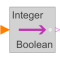

IntegerToBooleanConvert Integer to Boolean signal |

|
Information
This information is part of the Modelica Standard Library maintained by the Modelica Association.
This block computes the Boolean output y from the Integer input u by the equation:
y = u ≥ threshold;
where threshold is a parameter.
Parameters (1)
| threshold |
Value: 1 Type: Integer Description: Output signal y is true, if input u >= threshold |
|---|
Connectors (2)
| y |
Type: BooleanOutput Description: Connector of Boolean output signal |
|
|---|---|---|
| u |
Type: IntegerInput Description: Connector of Integer input signal |